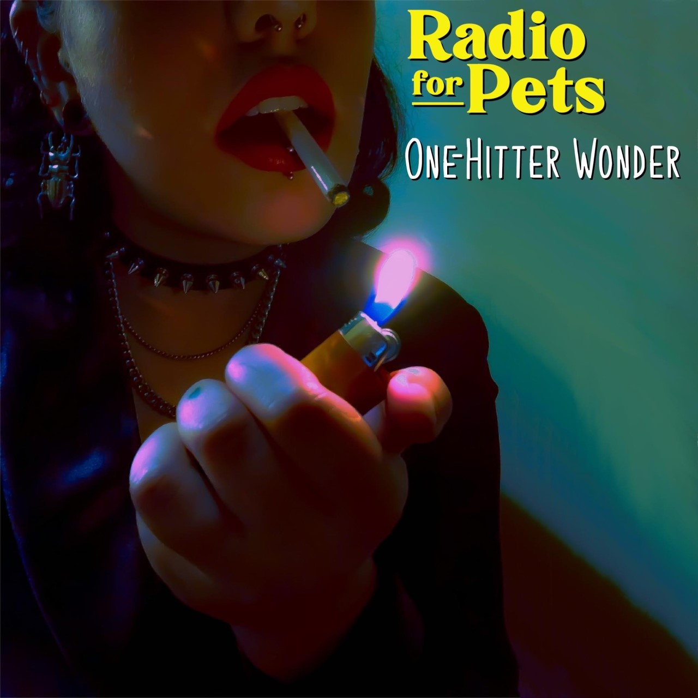

MUSIC


Tour Dates
ABOUT
Since their formation in 2019, Radio For Pets has been bringing you an eclectic blend of emo and pop punk. Based out of Green Bay, Wisconsin, they've been playing shows, growing their following all across the state. Radio For Pets has had the pleasure of being interviewed by and featured on Devile Radio (97.2FM) out of Madison, Wisconsin this past winter. They have also opened for Fox Royale, a nationally touring pop-punk band.
CONTACT
booking@radioforpets.com